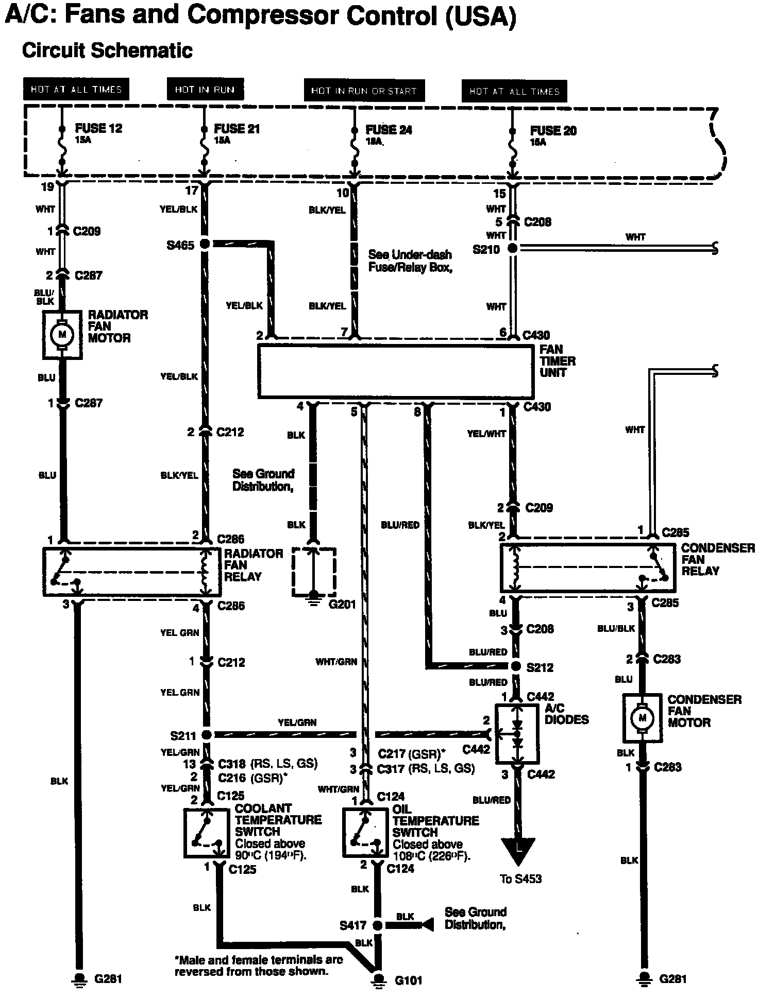
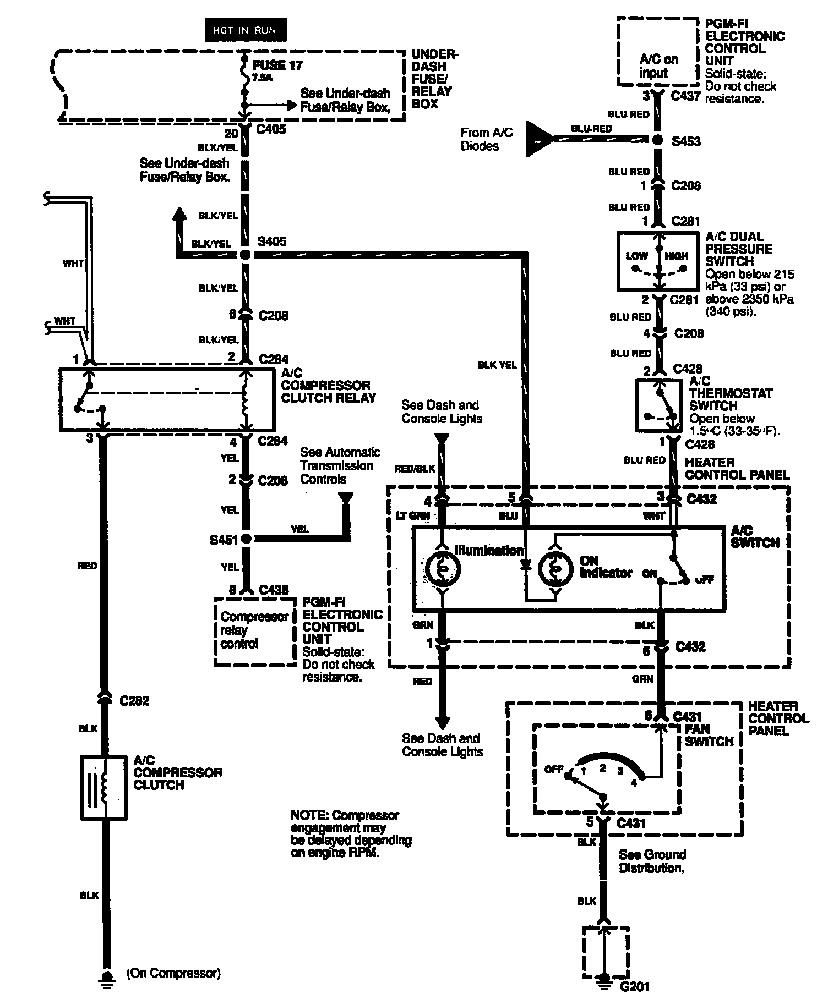

Operation CHARM
: Car repair manuals for everyone.
Home
>>
Acura
>>
1992
>>
Integra L4-1834cc 1.8L DOHC FI
>>
Repair and Diagnosis
>>
Engine, Cooling and Exhaust
>>
Cooling System
>>
Radiator Cooling Fan
>>
Radiator Cooling Fan Motor
>>
Diagrams
>>
Electrical Diagrams
>>
With A/C
>>
USA
USA
A/C Fans And Compressor Control (USA):

A/C Fan And Compressor Control (USA):
